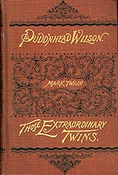

|

The Barrett Collection doesn't have a copy of the prospectus book agents used in 1894 to sell The Tragedy of Pudd'nhead Wilson and the Comedy of Those Extraordinary Twins, but the Beinecke Rare Book and Manuscript Library at Yale University does. For this archive I've created a virtual facsimile of one by combining 8 pages from the Beinecke unique to the prospectus with 53 pages from a Barrett copy of the novel's first edition. Those pages are identical in both prospectus and published text, with one exception: the page numbers of the 21 pages from the "Extraordinary Twins" are exactly 50 less than those in the published novel (I used Photoshop to change them to match the Beinecke prospectus). Subscription publishers often exaggerated the length of their books in a prospectus (this prospectus, for example, claims MT's book will have "nearly 500 pages," though the final total was 432) -- but that doesn't explain why propectus pages have lower numbers. To get the prospectus into the hands of sales agents early, they were probably set up in type before the whole book was printed, and so the printers had to guess what page "The Twins" would start on. They may just have guessed wrong, or someone at the American Publishing Co. (MT's old subscription publishers, once again selling his books after the failure of his own firm) may have wanted to suggest that the "farce . . . which furnishes most of the humor in the volume" was longer than the "tragedy." The American Publishing Co. knew people bought MT to laugh. Given the complexity of the book -- two texts tangled up in each other, and MT's most direct treatment of the themes of slavery and race -- it's interesting to see what portions of it went into a prospectus designed to attract the widest possible audience. And what portions of it were left out. The entire prospectus is reproduced below in the two-page format used throughout this archive. (For more on subscription publishing, see Marketing Twain. For a simulation of how a book agent displayed a prospectus, see Calling on a Customer.) Every page can be accessed separately -- or you can tour sixteen pages chosen to represent the whole (these are the pages marked on the list below with asterisks). There are three different ways to "tour" them. The first allows you to "turn" the pages at your own pace, to enlarge a page, and to move backward or forward through the prospectus. If you take either of the two "auto-tours," the pages will "flip" forward automatically. Depending on the speed of your connection to the archive, the Auto-Tours take between 2 and 3 minutes. |
|
Auto-Tour |
Auto-Tour |
Page-by-Page
|